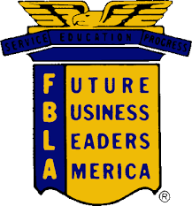

Scotts Hill

Business Leaders
Scotts Hill
Business Leaders
FBLA is a national organization. FBLA stands for Future Business Leaders of America. This acronym very accurately describes the goal that the organization is trying to accomplish. Creating and supporting the leaders of tomorrow is a very ambitious and overwhelming goal, however, FBLA has took the stand and already did so. Any member of FBLA will tell you that they have learned invaluable skills from participating with their local chapter.
There are many different goals that the FBLA organization wants to accomplish. Among these are: strengthening the confidence of students in themselves and their work, creating more interest in and understanding of American business enterprise, and assisting students in the establishment of occupational goals. However, possibly, the most sought after goals in FBLA is the development of competent, aggressive business leaders.